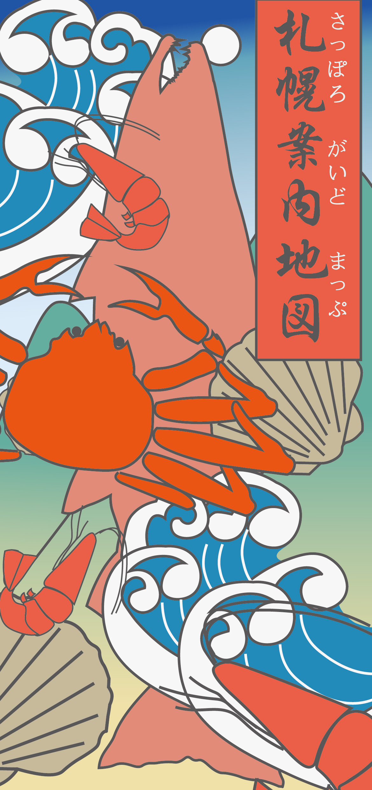
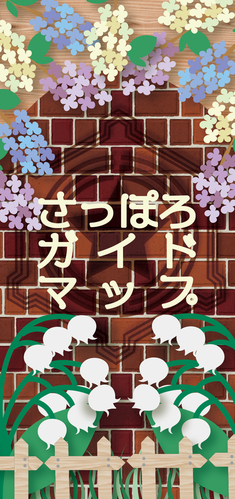
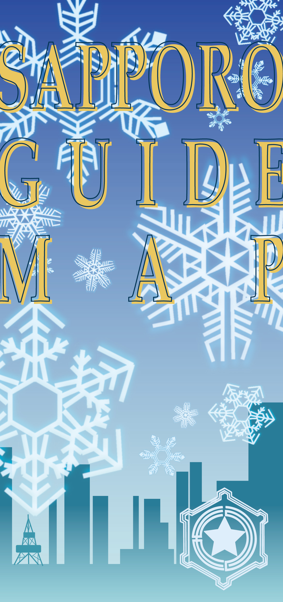
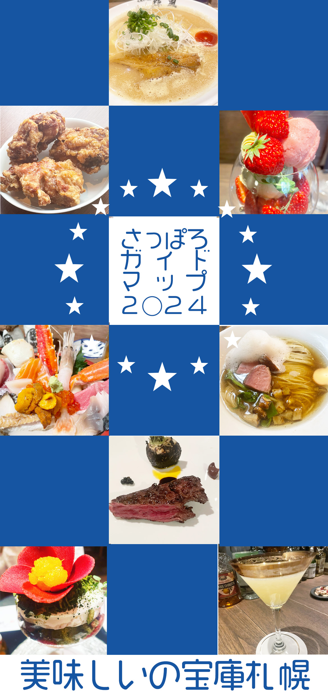
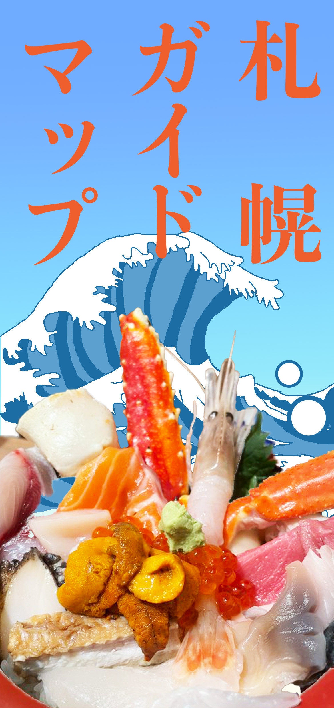
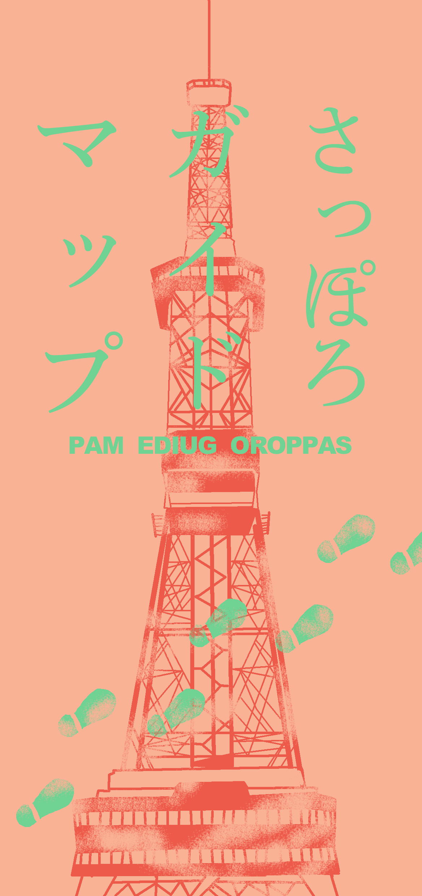

お題：札幌ガイドマップ表紙（A4三つ折りサイズ）

北海道といえば海鮮のイメージから浮世絵風のデザイン

札幌の花のスズラン、木のライラック、徽章を入れ公式らしいイメージです。

雪の降る都会、札幌をイメージ。徽章 も入れております。

碁盤の目になっている札幌の街から市松模様のデザインに。色と星は札幌駅ステラプレイスの時計から。

美味しそうな写真を活かしたデザイン。

スタンプラリーの様に歩くイメージのデザイン。クラシック感が出るように英語を右から読ませています。